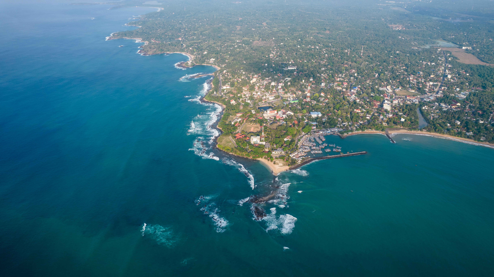

Kosgoda Turtle Hatchery
Located on Sri Lanka's south-west coast, the Kosgoda Turtle Hatchery is a renowned tourist attraction that promotes sea turtle conservation. Established in 1981 and managed by the Sri Lanka Wildlife Protection Society, the hatchery serves as a vital sanctuary for sea turtle eggs and hatchlings. Visitors can learn about the turtles' life cycle, witness the hatching process, and even participate in releasing baby turtles into the ocean. By supporting the hatchery, tourists contribute to the preservation of these magnificent creatures and the protection of their habitats.
Activities at Kosgoda Turtle Hatchery
- Turtle hatchery tour
- Turtle feeding
- Turtle release
- Educational programs
Embark on a captivating turtle hatchery tour! Experience the wonder of witnessing baby turtles hatch and make their way to the sea, while supporting vital conservation efforts for these incredible creatures.
Participate in feeding the turtles! Learn about the different species of sea turtles and their diets, and help feed them their favorite foods.
Participate in releasing baby turtles into the ocean! Learn about the turtles' life cycle and the challenges they face, and help them make their way to the sea.
Learn about sea turtles and their conservation! The hatchery offers educational programs for visitors to learn about the different species of sea turtles, their life cycle, and the threats they face.
Conservation Efforts
The Kosgoda Turtle Hatchery works to protect sea turtle populations in several ways, including:
- Collecting and incubating turtle eggs
- Releasing hatchlings into the ocean
- Providing medical care to injured turtles
- Researching sea turtle behavior and ecology
By collecting and incubating turtle eggs, conservationists play a critical role in safeguarding sea turtle populations. This hands-on approach increases the survival rates of hatchlings and contributes to their long-term conservation.
Releasing hatchlings into the ocean is a crucial step in the conservation of sea turtles. This process allows the hatchlings to make their way to the sea and begin their lives in the wild.
Providing medical care to injured turtles is an essential part of sea turtle conservation. Injured turtles are treated and rehabilitated, and if they cannot be released into the wild, they are provided with a permanent home.
Researching sea turtle behavior and ecology is a vital aspect of sea turtle conservation. This research helps scientists understand the turtles' behavior and ecology, which is crucial in developing effective conservation strategies.